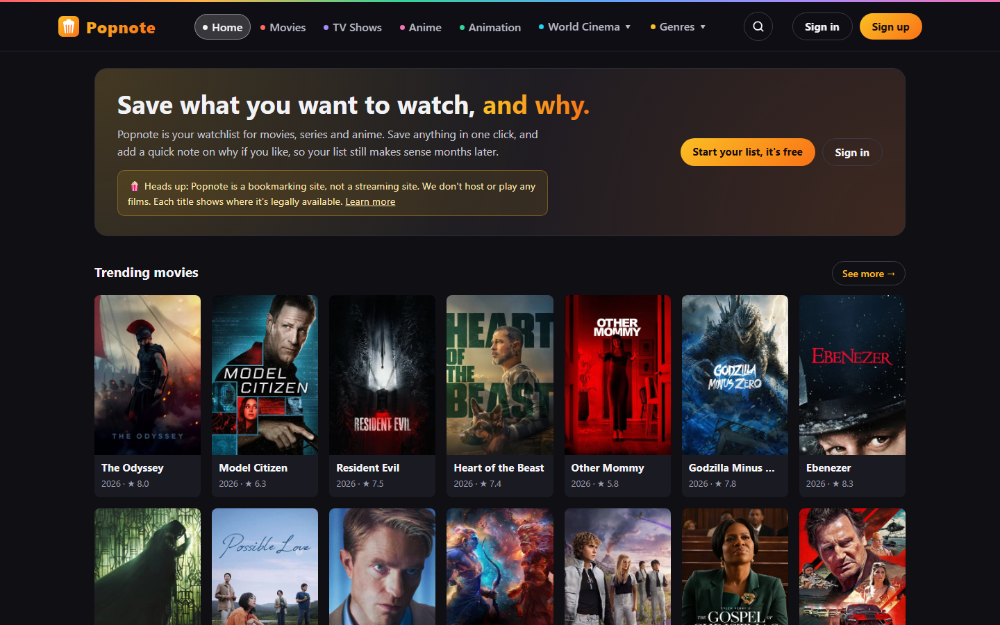
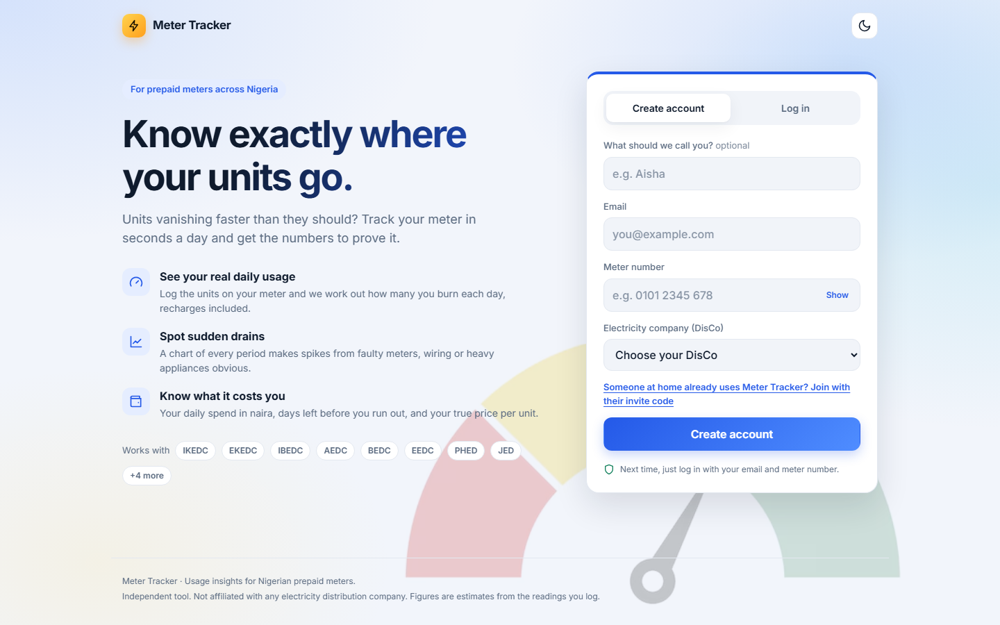
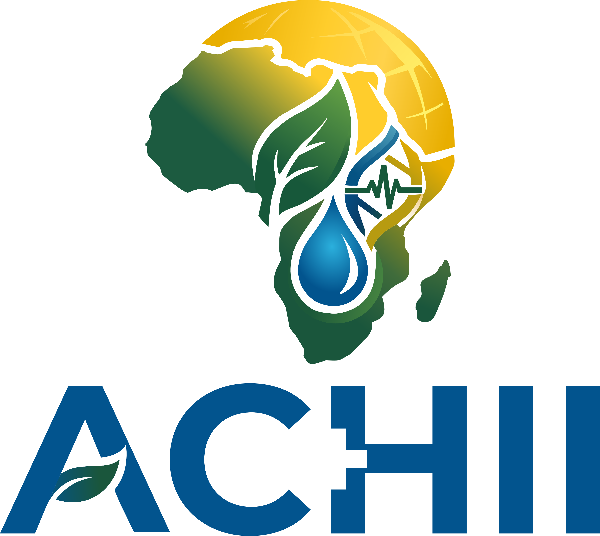
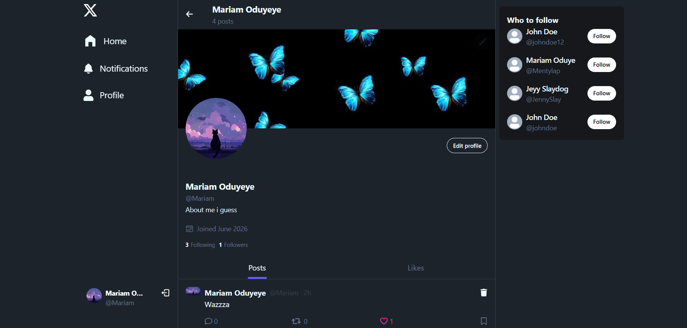
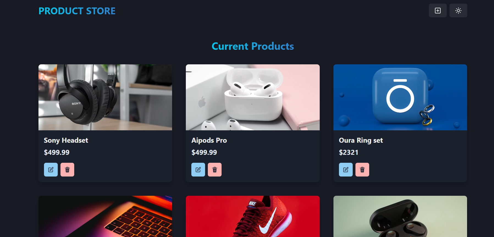

📍 Lagos, Nigeria (open to remote) | ✉️ oduyemariam@gmail.com
Full Stack Developer building end-to-end web apps with React, Next.js, TypeScript, Supabase and Firebase.
A full stack developer with a degree in Computer Science. I build responsive, user-focused apps from the interface to the database, with React, Next.js and TypeScript on the front end and Node.js, Supabase, Firebase and MongoDB behind them. I also work with Python, Power BI, QGIS and Google Earth Engine for data and mapping work.

A watchlist for movies, series and anime: browse by genre, A–Z or country, see trailers, cast and where each title is streaming in Nigeria, and save titles with notes.

Tracks prepaid electricity meters across Nigeria: log readings and recharges to see daily usage, spot sudden drains on a chart, and share one meter with your household.

The website of the Africa Climate and Health Innovation Institute (ACHII): training webinars, a resource bank, a blog, and sign-ups with automatic welcome emails.

A social media app where users post and interact, with an Express and MongoDB REST API behind a React front end.

An e-commerce app where users create, view, update and delete products through a REST API.
Open to full stack roles, freelance work and collaborations. Reach out below.